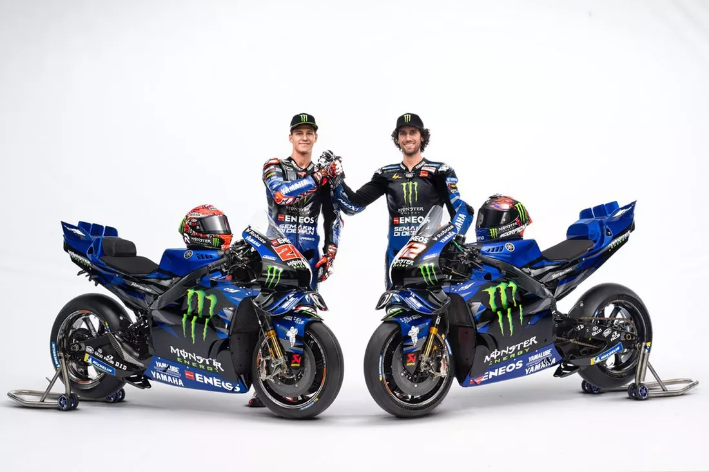

Yamaha y su participacion en moto GP
Yamha ha sido una de las marcas mas importantes en la historia del campeonato Mundial del Motociclismo. Su participacion en competiciones internacionales ha contribuido al desarrollo de motociclestas deportivas y a la evolucion de diferentes tecnologias.
Uno de sus modelos de competición mas conocidos es la YZR-M1, una motocicleta diseñada especificamente para competir en la categoria reina de MOTOGP.No es una moto de calle convencional: esta desarrollada para ofrecer altas prestaciones en circuito, con componentes especializados en suspension, frenos, aerodinamica y electronica.
Es importante señalar que una moto de MotoGP es muy diferente de una DT-125. La primera esta diseñada para competir encircuitos asfaltados, mientras que la segunda pertenece a una familia de motocicletas orientadas a uno mas versatil.
volver al inicio